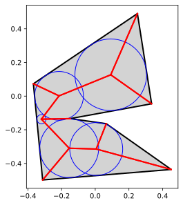
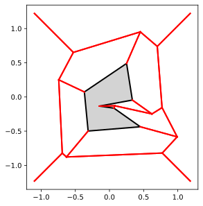
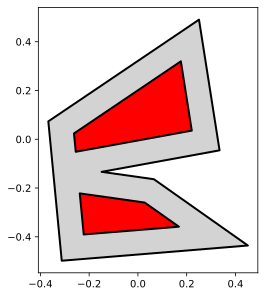
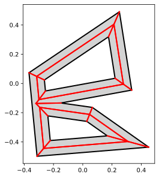

Polygonal skeletons (straight skeletons)¶
scikit-geometry contains functions to work with straight skeletons of polygons. The straight skeleton can be used to create inset or offset polygons from a polygon, or a polygon with holes.
[1]:
import skgeom as sg
from skgeom.draw import draw
import matplotlib.pyplot as plt
def draw_skeleton(polygon, skeleton, show_time=False):
draw(polygon)
for h in skeleton.halfedges:
if h.is_bisector:
p1 = h.vertex.point
p2 = h.opposite.vertex.point
plt.plot([p1.x(), p2.x()], [p1.y(), p2.y()], 'r-', lw=2)
if show_time:
for v in skeleton.vertices:
plt.gcf().gca().add_artist(plt.Circle(
(v.point.x(), v.point.y()),
v.time, color='blue', fill=False))
[2]:
poly = sg.random_polygon(seed=1)
skel = sg.skeleton.create_interior_straight_skeleton(poly)
draw_skeleton(poly, skel)

[3]:
draw_skeleton(poly, skel, show_time=True)

[4]:
skel = sg.skeleton.create_exterior_straight_skeleton(poly, 0.1)
draw_skeleton(poly, skel)

[5]:
skel = sg.skeleton.create_interior_straight_skeleton(poly)
draw(poly)
for offset_poly in skel.offset_polygons(0.1):
draw(offset_poly, facecolor="red")

[6]:
from skgeom import boolean_set
import functools
poly_with_holes = functools.reduce(
lambda a, b: boolean_set.difference(a, b)[0], skel.offset_polygons(0.1), poly)
draw(poly_with_holes)

[7]:
draw_skeleton(poly_with_holes, sg.skeleton.create_interior_straight_skeleton(poly_with_holes))

[ ]: